UX Analysis of the Mining Journal subscription plan looking at key user experience improvements and redesigning a simple example of the improved version.
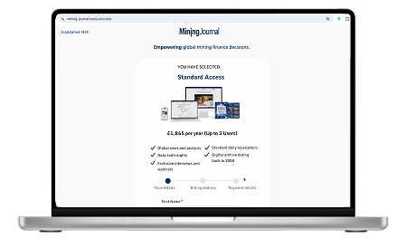
The Mining Journal website faced usability and navigation challenges that disrupted the overall user journey.
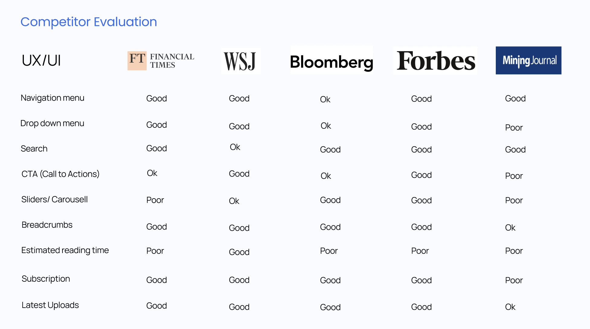
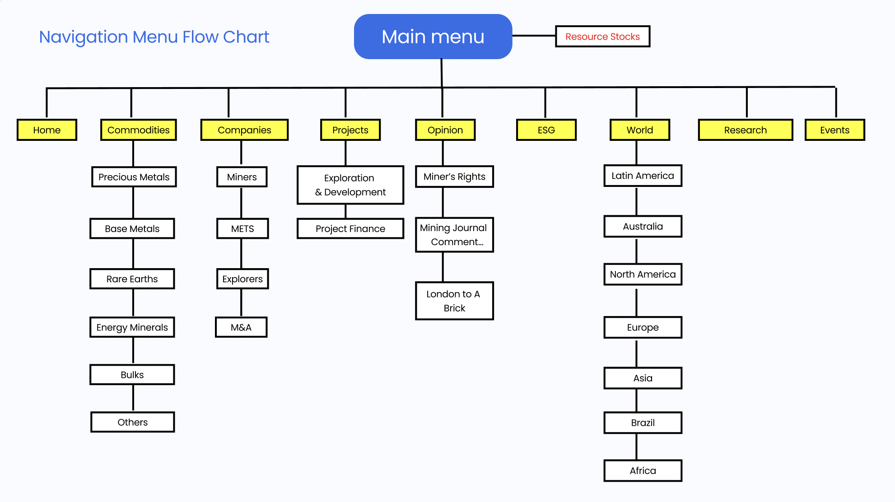
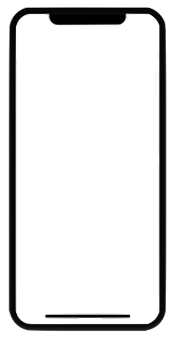
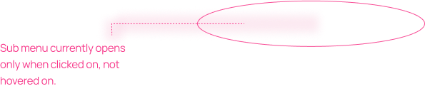
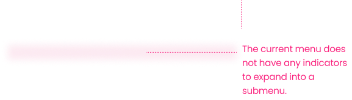
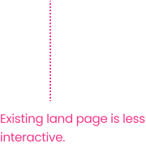
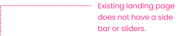
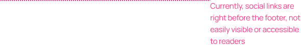
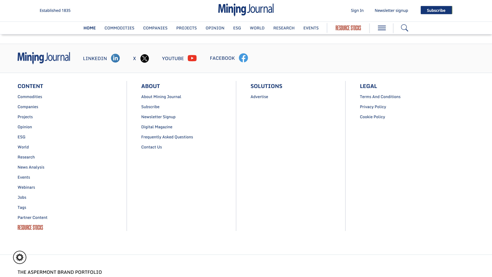
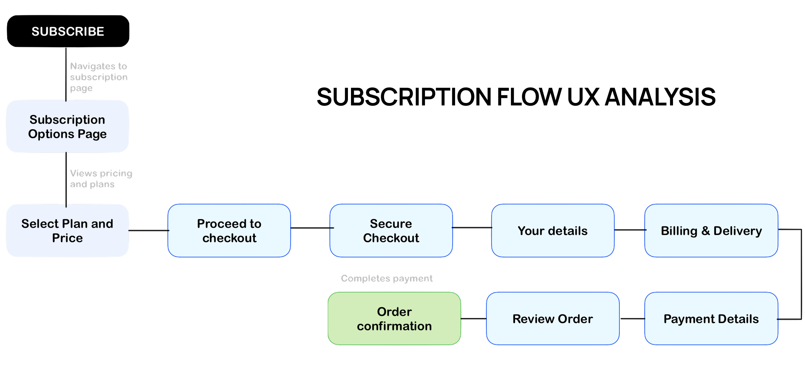
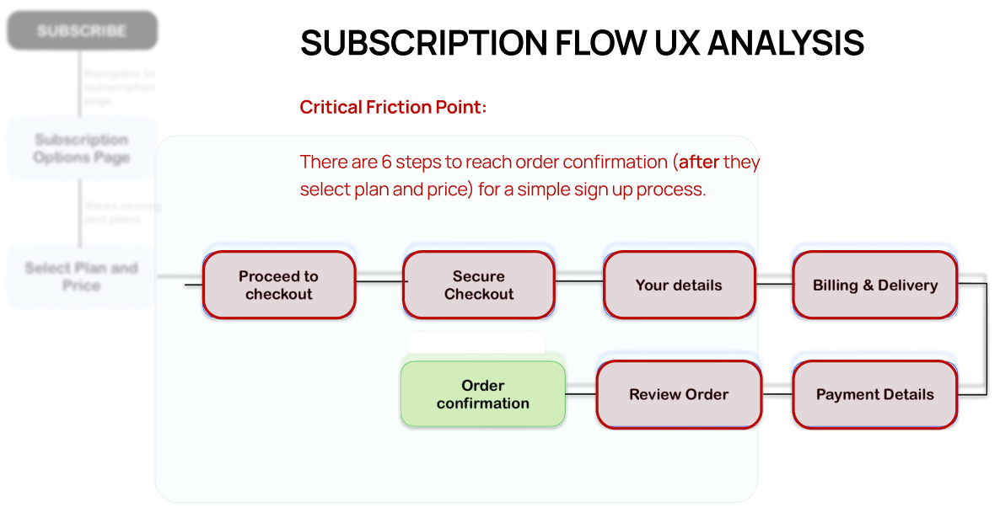
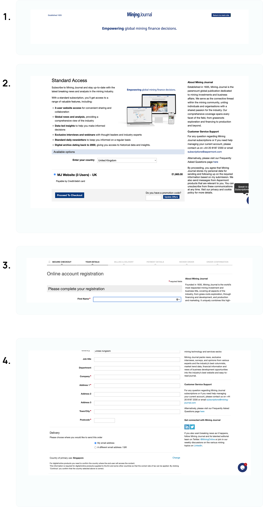
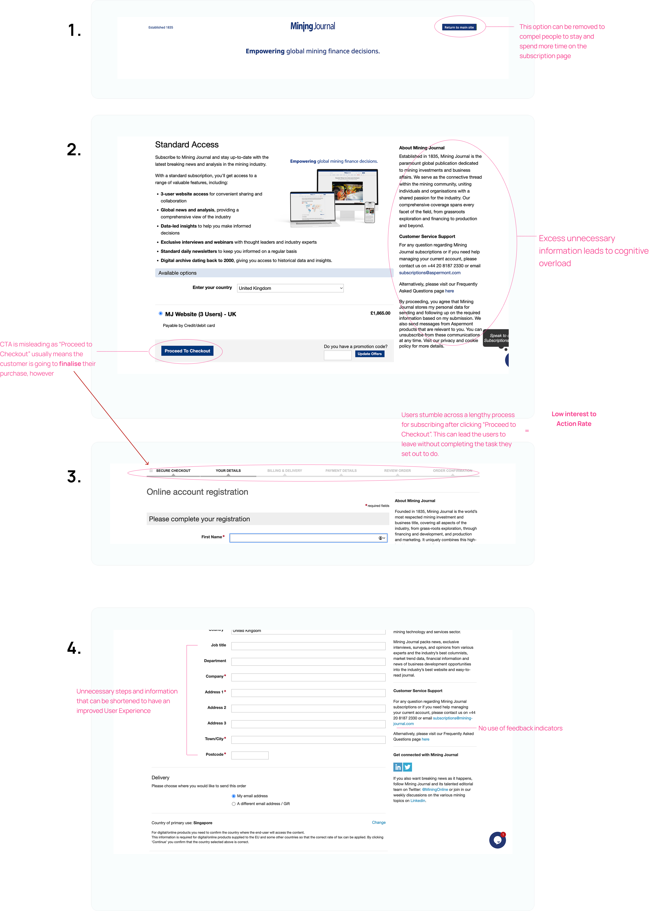
This is an improved version of the Mining Journal’s subscription flow, redesigned to address key UX issues such as cognitive overload, lengthy processes and friction points for users. The goal is to streamline the user journey, reduce drop-offs, and enhance the overall subscription experience.